> Hello World.
My name is Darryl Laiu. I'm a multimedia journalist. I'm currently at the DevHub at Hearst Newspapers building graphics and analysing data.
Read more


Selected work
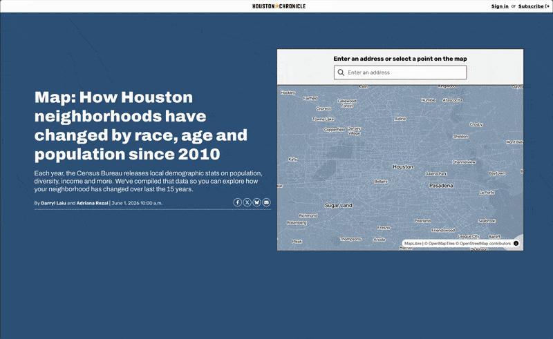
How has your neighborhood changed?
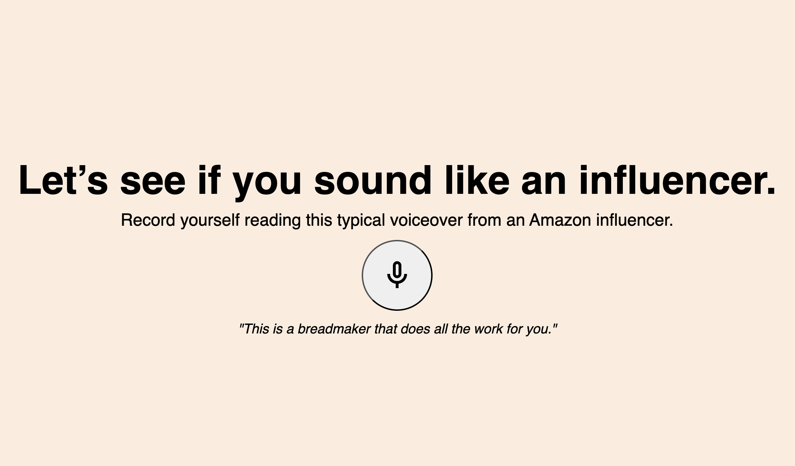
Why do TikTokers talk differently?
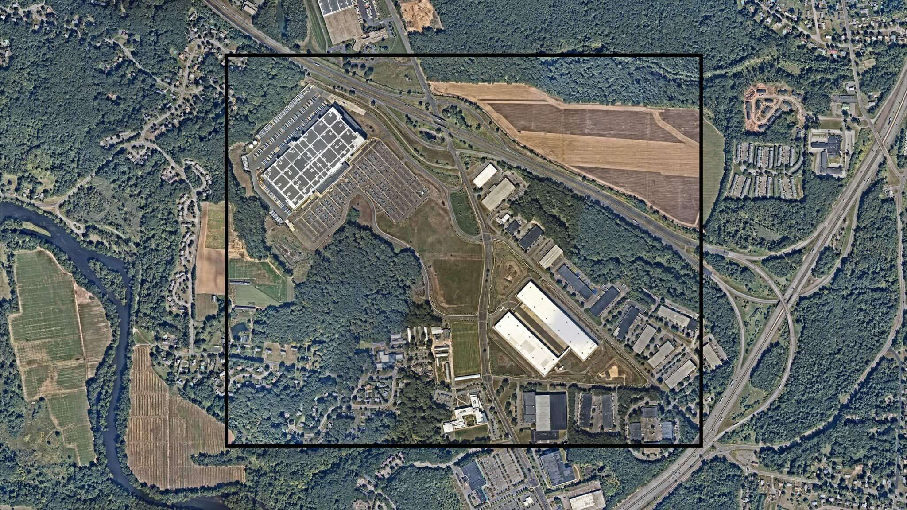
How development reshaped Connecticut
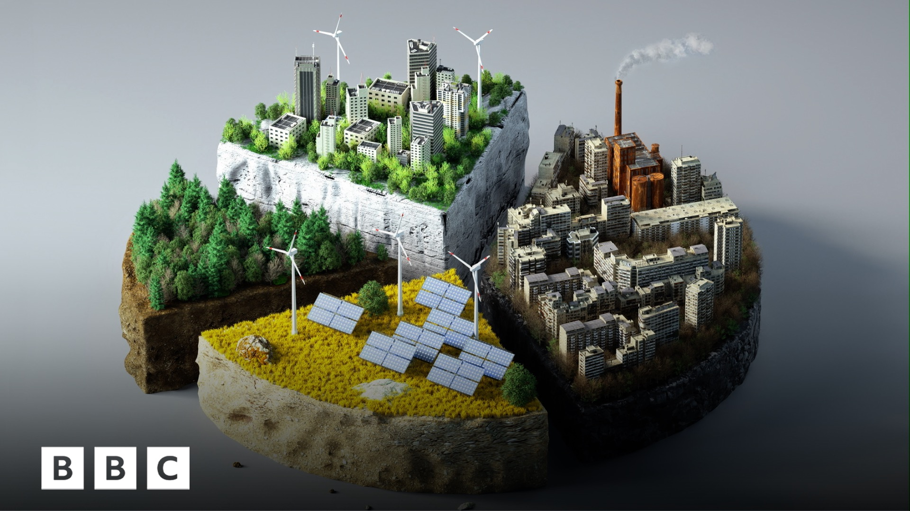
Who should pick up the bill for climate damage?
Everything else
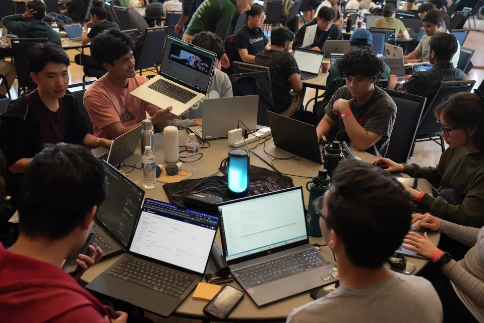
S.F. public data was a niche interest. That was before ‘vibe-coding’
Requests to datasets from San Francisco Open Data have skyrocketed since the introduction of AI coding assistants.
Bay Area companies want employees back in the office. Remote work isn’t budging
The share of days worked from home has remained relatively stable in the past year, despite Bay Area companies implementing return-to-office policies.
S.F. police are rapidly expanding drone use. Critics warn of surveillance risk
The city’s police have already deployed drones more drones in 2026 than all of 2025.
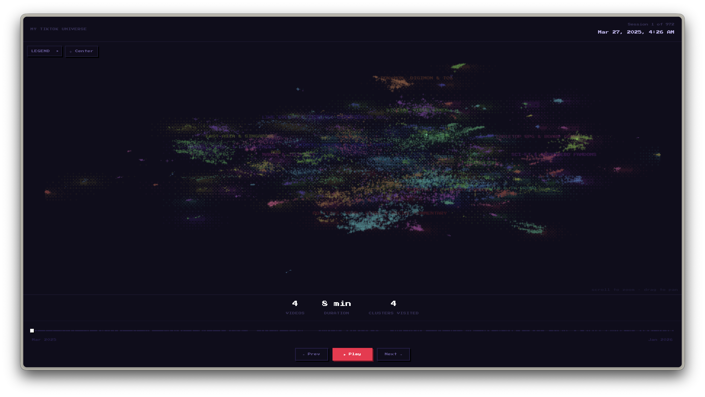
Tiktok Universe
I turned my TikTok watch history into a galaxy you can explore.
TikTok Wrapped
I downloaded my TikTok watch data, transcribed it, and ran cluster analyses on the transcripts to find patterns in what I watched.
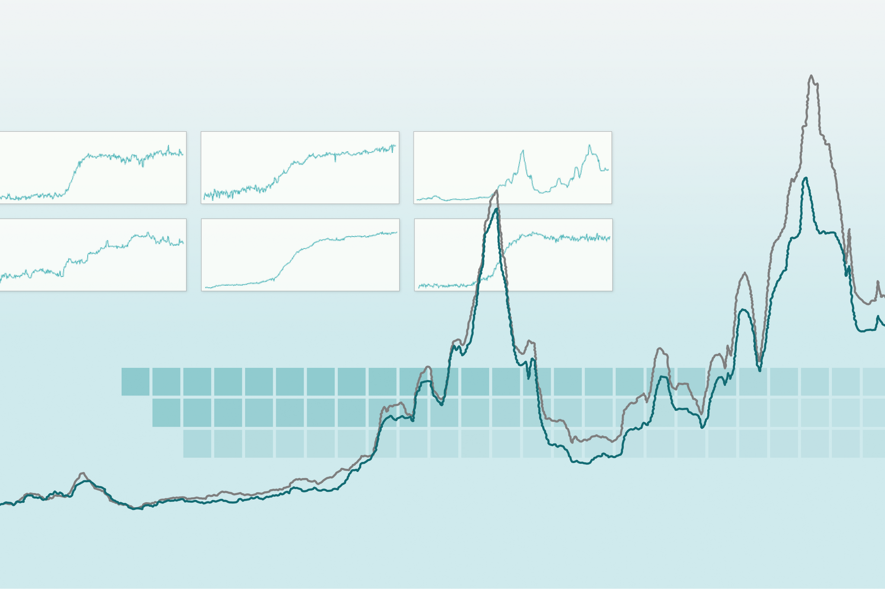
Grocery Price Dashboard
I helped build a dashboard that tracks grocery prices across time, published across six Hearst markets. This piece earned an Award of Excellence from the Society of News Design in 2026. Role: graphics development.
Spotify Wrapped
I presented the city's top tracks from Spotify in an interactive presentation. Role: design, graphics development
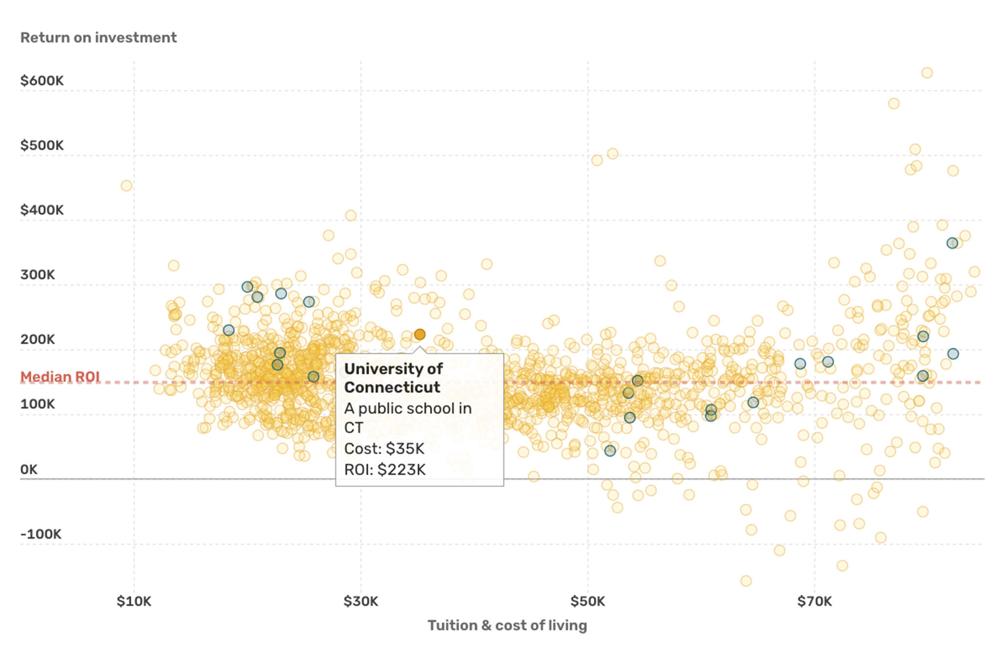
College Return on Investments
I helped translate analyses of the ROI for different colleges in California for stories in other states.
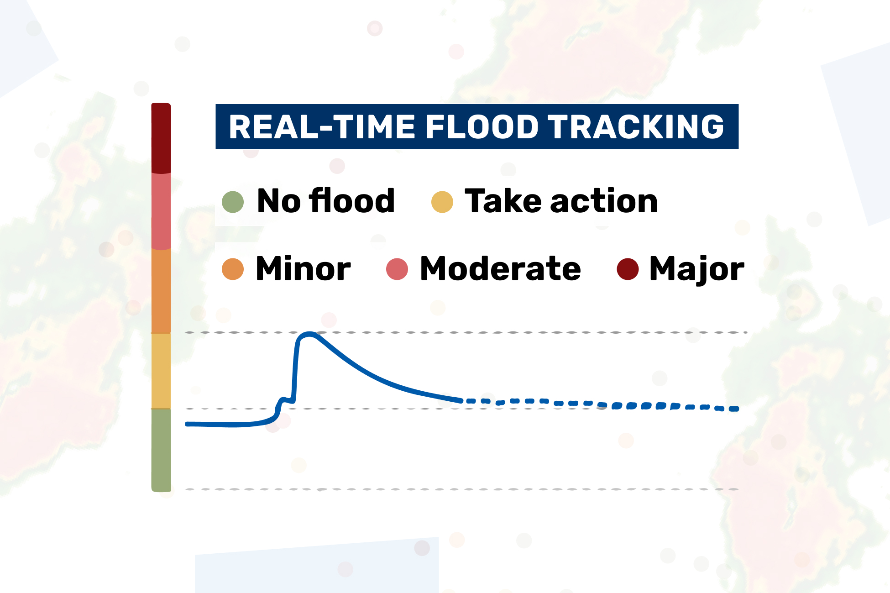
California flood/tsunami map
I helped tweak the front end to also display tsunami data when relevant.
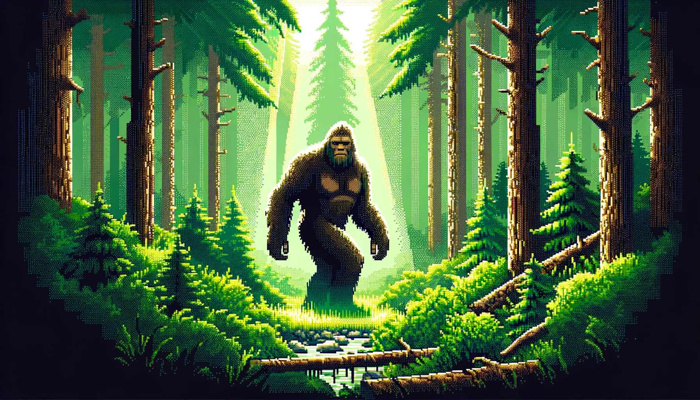
What does Bigfoot look like?
I went through more than 4,000 reports of bigfoot sightings to learn more.
The value of a game review
IGN is famous for giving 7s. But is it actually true? I scraped about 13,000 of their reviews to find out.
How John Oliver does good journalism while making you laugh
I transcribed and annotated an episode of Last Week Tonight to argue why he's more of a journalist than a comedian
When was the best SNL era, objectively
I came up with a metric to end the decades-long debate once and for all.
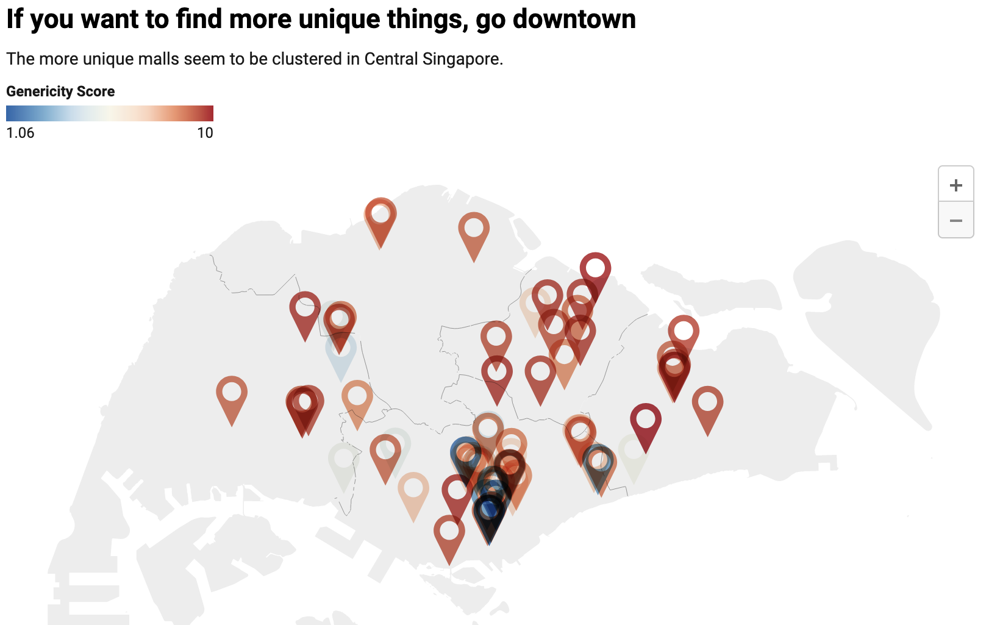
Why do all malls in Singapore feel the same?
If you've lived in Singapore, you know how important malls are. But do they all have to feel the same?
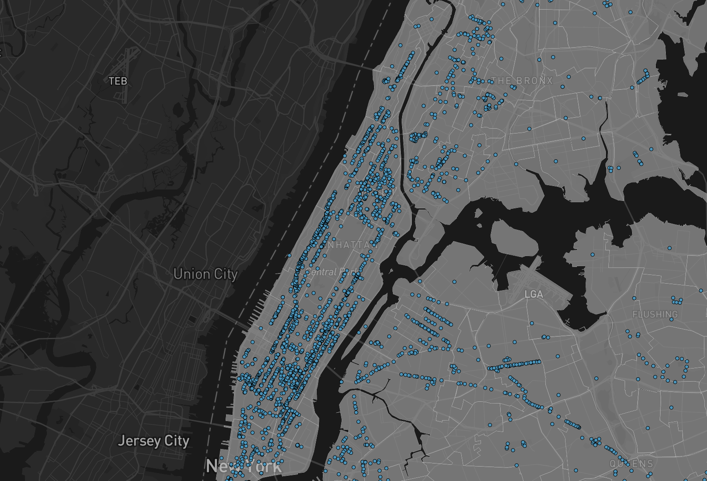
Here's where every WiFi hotspot is in NYC
Visualising every NYC WiFi in the city and counting them in each neighborhood.
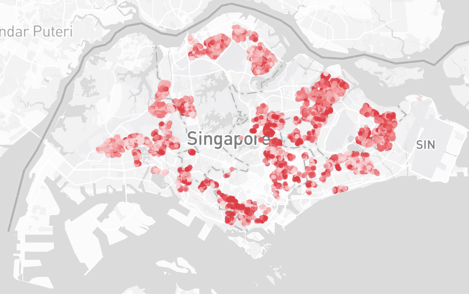
Here's how much your neighbours are selling their flat for
Public housing is the only thing Singaporeans my age ever talk about. Here's a handy tool to check how much they're being sold for.